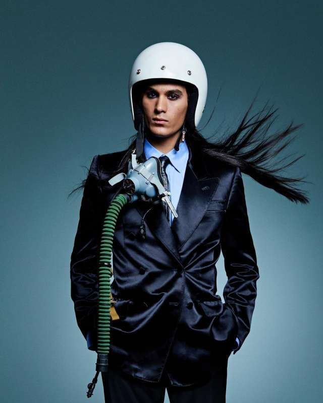

|
NAME :Damiano David
AGE :24 yeard old
BORN : January 8, 1999 (Rome, Italy)
HEIGHT :1.8m
POSITION:Main Singer
|
|
NAME :Thomas Raggi
AGE :22 yeard old
BORN : January 18, 2001 (Rome, Italy)
HEIGHT :1.87m
POSITION:Guitarist
|
NAME :Victoria De Angelis
AGE :23 yeard old
BORN : April 28, 2000 (Rome, Italy)
HEIGHT :1.6m
POSITION:Bassist
|
|
NAME :Ethan Tochio
AGE :23 yeard old
BORN : October 8, 2000 (Rome, Italy)
HEIGHT :1.8m
POSITION:Drummer
|
 |